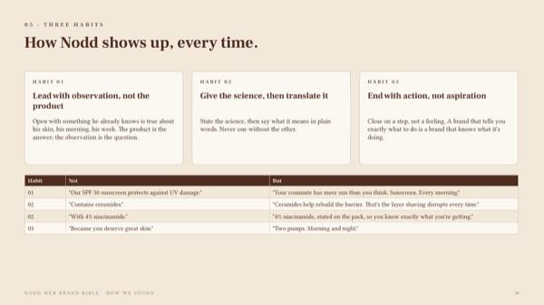

01 / Brand system
Brand Bible
A 140-slide source system covering brand foundations, customer, voice, visual identity and creative direction.
Explore the Brand Bible ↗A pre-launch build across the connected decisions, experiences and systems behind a D2C skincare brand.
Strategy → executionThe challenge was to connect the customer promise to the systems that would deliver it.
The work documented here spans the foundations and operating model of a D2C skincare business before launch.
That meant working across research, brand definition, product and digital experience, acquisition planning, content, commerce infrastructure, financial visibility and launch operations. The value is in how those parts relate, not in presenting them as unrelated deliverables.
How do you make the brand promise work in practice?
Select a discipline to follow its place in the system. The connections show how the workstreams inform one another.
Conceptual relationship map / not a process flow
Audience research, market context, positioning, brand strategy and the foundations that shape the decisions downstream.
Explore a related artefact ↗Selected public artefacts and generalized tools. Some dashboards use sample or illustrative data; confidential source material remains excluded.

A 140-slide source system covering brand foundations, customer, voice, visual identity and creative direction.
Explore the Brand Bible ↗
Audience archetypes, TAM ranking, entry-point playbook and 18 ICPs across three SKU concepts, with private source details generalized.
Explore the research ↗Two dashboard views, ten source/connector tabs and a documented Google Ads to Sheets sync. This portfolio view is architecture-led, not a live account.
Explore dashboard architecture ↗Signup funnel, channel structure, founding-member numbering and email performance using sample data.
Explore the programme ↗A generalized 61-task starter tool across 11 departments, with filters, editing, local save and CSV export.
Explore the operating system ↗A driving-game concept for a locked storefront, with vehicle selection, accelerator/brake controls and newsletter signup.
Explore the experiment ↗Work completed during September–November 2026, represented as pre-launch systems and artefacts. No launch or revenue outcome is implied.
Brand Bible, ICP analysis, website copy plan, Shopify experience, marketing/e-commerce dashboards, P&L model, keyword intelligence, launch tracker and content systems.
Cross-functional launch planning, operating workflows, dashboard architecture, analytics definitions, content processes and automation concepts.
Waitlist programme, AI Style Profile concept, gamified Shopify entry experience and AI-assisted store-health review.
No live launch, revenue, conversion uplift, CAC improvement or customer acquisition result is claimed in this case study.
Pre-launch work is evidence of capability and systems, not proof of market performance.